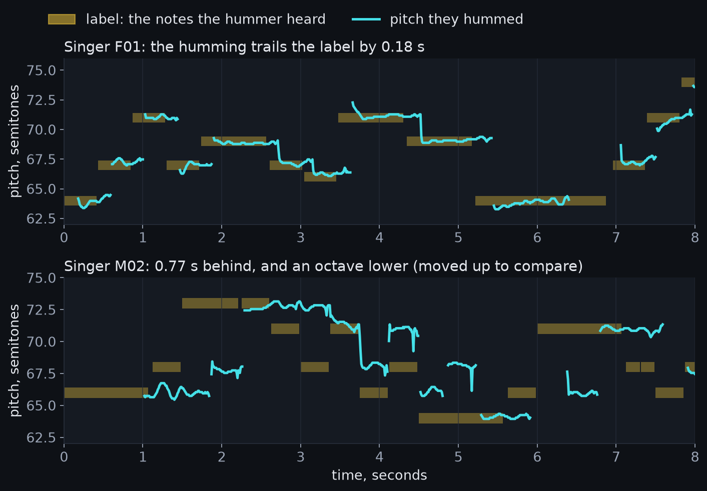
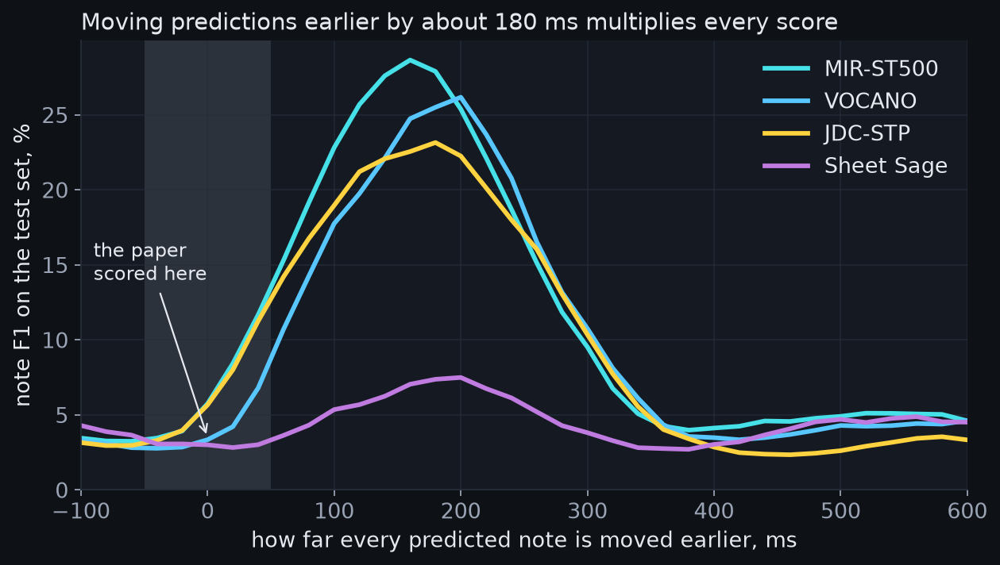
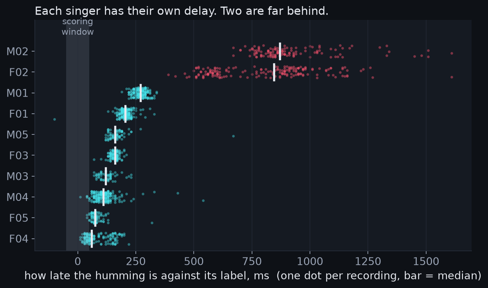
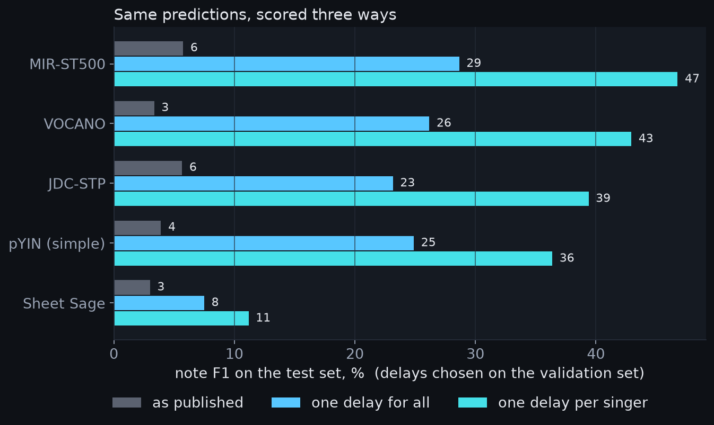
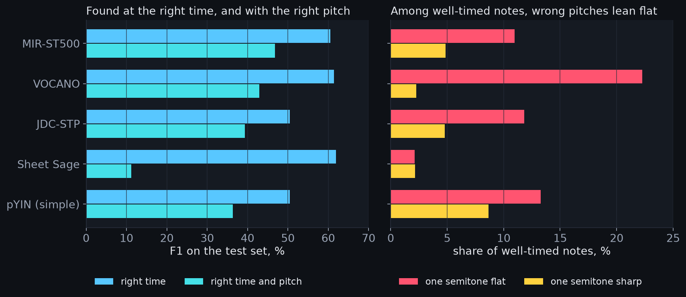

HumTrans is a public set of hummed tunes with their written notes. It holds 56 hours from ten people. Its authors tested four transcription models on it. The best got about six notes in a hundred right. We wanted to know why the scores were so low.
The short answer is timing. The hummers came in late, by about a fifth of a second. The scoring forgives only a twentieth. Allow for the delay, and the same outputs score up to 47 in 100. This page shows how we found that. It also shows what is still hard.
Ten music students hummed 500 songs. Five were women and five were men. Each song was cut into one to four segments. Each segment was hummed about fifteen times, across people and takes. That gives 14,614 recordings. The median recording lasts 13 seconds and holds about 27 notes.
The notes came from sheet music, turned into MIDI. The hummer heard that MIDI through headphones. They hummed along with it. So each label is the score, not a timing of the humming. Nobody marked where each hummed note really starts.
The official split keeps songs apart. No song in the test set appears in training. All ten hummers appear in every part, though. So the test is fair for new songs. It is not a test on new voices.
The audio is clean. Background noise sits a median 41 dB below the humming. Clipping is rare. The octave is less tidy. Two recordings in five sit an octave away from their label.
The hummers are fairly accurate on pitch. Held notes land a median 18 cents from the label. That is under a fifth of a semitone. Most hum a little flat. One hummer, M02, is flat by a third of a semitone.

We first ran the authors' own scoring script. It gave back all 24 numbers in their table, to the digit. The four models' outputs are public, so nothing had to be run again. The metric counts a note right if it starts within 50 ms. It must also have the right semitone, in any octave.
Then we slid each model's notes earlier in time. Scores rose steeply and peaked near 180 ms. At the peak, the best model scores five times higher. Every model peaks in the same place. That points to the recordings, not the models.

We then measured the delay in the humming itself. For that we used a pitch tracker, which needs no training. We lined its pitch up with the label, one shift at a time. The best shift is the delay. Its median is 190 ms.
The delay belongs to the hummer. Eight hummers sit between 60 and 270 ms. Two sit near 850 ms, and spread widely. Within one recording the delay barely moves. The second half matches the first to within about 50 ms, nine times in ten.

We cannot say where the delay comes from. Headphones, phone audio and reaction time could each add some. The delay has one more cost. Each recording stops where the label's last note ends. So a late hummer loses part of the last note. The median loss is 15 percent of it.
We scored the same outputs three ways. First as published. Then with one delay for everyone. Then with one delay per hummer. Each delay was picked on the validation set. It was then scored on the test set, which it never saw.
The best model goes from 6 to 47 in 100. The pitch tracker reaches 36, with a few hand-set rules. That is close to two of the trained models. Sheet Sage stays low, at 11. It finds note starts as well as the others. Then it gets most pitches wrong.

Even corrected, about half of all notes are missed or wrong. Most of the loss is at note starts. The best models find about 60 in 100 of them. Pitch costs the rest. One in five to three in ten well-timed notes has the wrong pitch.
The wrong pitches lean flat. Three models make flat errors two to ten times more often than sharp ones. That fits hummers who sing flat. A model that knew each hummer's tuning could fix some of these.

The hummer matters as much as the model. The best model scores 71 on F03 and 16 on M02. The weakest are the two late hummers, then the least accurate one. So a transcriber that knows its hummer has room to gain.
This benchmark scored humming against the wrong clock. The labels are the score, played to the hummer. The humming trails it by a personal delay, steady within each take. Fix that, and today's models get about half the notes right. Not six in a hundred.
Three lessons carry over to any humming tool. Measure the delay of each person and device. Expect the octave to be off, and ignore it. Spend effort on note starts and semitone choices. That is where the errors are now.
This bears on a personal transcription system. For most hummers, delay and tuning are a few numbers. A short calibration can learn them. The two late hummers drift between takes, so check it each session. The larger gains lie in note starts and pitch choices for one voice. That is where many takes would pay off.
The dataset and paper are by Liu and others, 2023. The model outputs and scoring script are in their repository. Our code and numbers are on GitHub. No audio is shared.